İletişim
DataOfis Hakkında detaylı bilgi için bize ulaşın...Ürünler
Bilgin-2 SINAV DEĞERLENDİRME SİSTEMİ
Genel Tanıtım :
Bilgin 2 Sınav değerlendirme sistemi İl Milli Eğitim Müdürlükleri düzeyinde Seviye Tespit, Başarı Değerlendirme vb. sınavları değerlendirmek üzere hazırlanmış Windows tabanlı bir yazılımdır. Yazılımın temel fonksiyonları; optik okuyucu (OMR) cihazdan gelen öğrenci yanıtlarının alınması, sınavların değerlendirilmesi, sınav sonuç belgelerinin ve sınav sonuç listelerinin hazırlanması, yapılan sınavla ilgili başarı istatistiklerinin hazırlanması ve sınav sonuçlarının internet üzerinden yayınlanması olarak özetlenebilir.
İşlem Adımları ve Özellikler:
1 – Sınav İçin Gerekli Tanımların Yapılması
Her sınav için bir sınav dosyası oluşturulur.
Sınırsız sayıda sınav dosyası oluşturulabilir.
Sınavın yapılacağı il için gerekli ilçe, eğitim bölgesi ve okul bilgileri girilir.
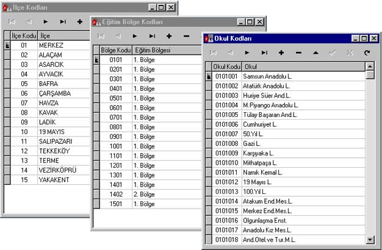
Şekil - 1:İlçe, Bölge, Okul Giriş Ekranları
Her Sınıf Seviyesi İçin Ders Tanımları Değerlendirme biçimleri tanımlanır.
İlköğretim düzeyinde Not yada Ağırlıklı Puan hesabına göre değerlendirme yapılabilir.
Lise düzeyinde Not, Ağırlıklı Puan yada ÖSS katsayılarına göre değerlendirme yapılabilir.
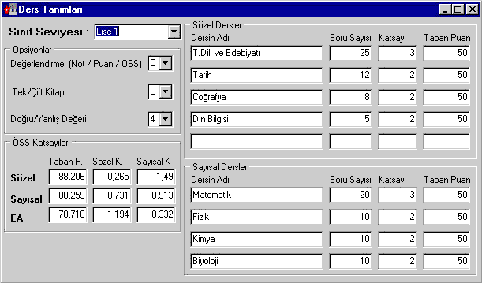
Şekil - 2 Ders Tanımları Giriş Ekranı
Her sınıf düzeyi için cevap anahtarları girilir.
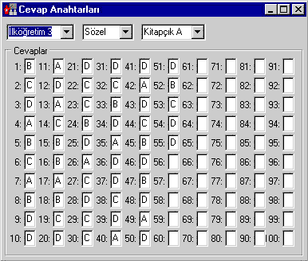
Şekil - 3 Cevap Anahtarları Giriş Ekranı
2 - Öğrenci Yanıtlarının Alınması:
Optik Okuyucu cihazla okunan öğrenci yanıtları bir seferde yada parça parça yazılıma alınabilir.
Öğrenci yanıtları yazılıma alınırken filtreler uygulanarak, öğrencilerin optik form üzerinde yapmış olabilecekleri bazı hatalar otomatik olarak düzeltilebilir. ( öğrenci numarasındaki boşlukları sıfır olarak doldurmak, ilçe, okul kodlarının düzeltilmesi vb. )
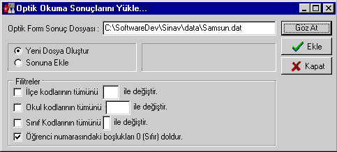
Şekil - 4: Optik Okuma Sonuçları Yükleme Ekranı
3 - Verilerin Kontrolü ve Düzeltilmesi:
Optik Okuyucudan alınan bilgiler üzerinde ilçe, okul, şube, isim vb. bilgilerde oluşabilecek kodlama ve okuma hatalarına karşı, sınav değerlendirme başlamadan önce veriler kontrol edilip, gerekli düzeltmeler yapılabilir.
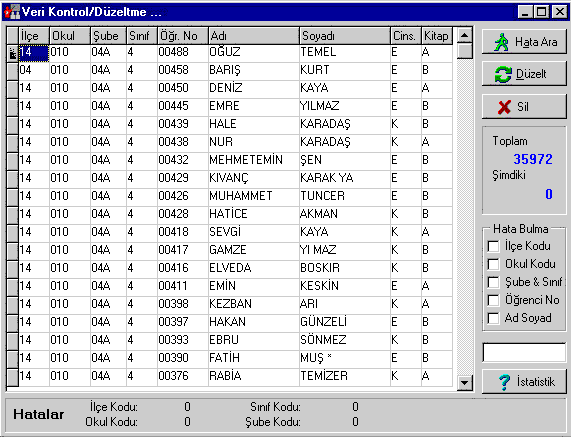
Şekil - 5 Veri Kontrol ve Düzeltme Ekranı
Kontrol ve düzeltme işlemi sırasında öğrenci cevapları kullanıcıya kesinlikle gösterilmez.
Kontrol ve düzeltme işlemi sırasında ilçe, okul, şube kodları vb. alanlarda otomatik hata bulma ve düzeltme yaptırılabilir. Ayrıca manuel düzeltme imkanı da vardır.
4 - Sınav Değerlendirme:
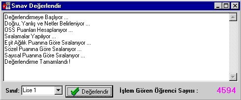
Şekil - 6: Sınav Değerlendirme Ekranı
Yukarıda belirtilen hazırlıklar tamalandıktan sonra sınav değerlendirme işlemine geçilebilir. İşlem tamamen otomatiktir.
Sınav değerlendirildikten sonra, raporlamalara başlamadan önce sonuçlar ekranda görüntülenebilir.
Şekil - 7 Sınav Sonuç Kontrol Ekranı
5 - Karne Dökümü:
Karneler standart ve ayrıntılı olarak 2 farklı şekilde dökülebilir.
Karne Dökümü belirli aralıkta yada referans numarasına göre yapılabilir.
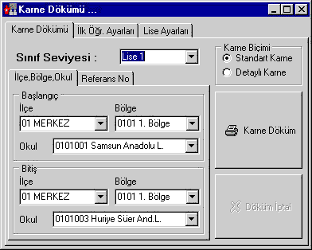
Şekil-8 Karne Döküm Ekranı
6- Raporlar
Puan Sıralama Listeleri İl, ilçe, eğitim bölgesi, okul ve şube bazında dökülebilir.
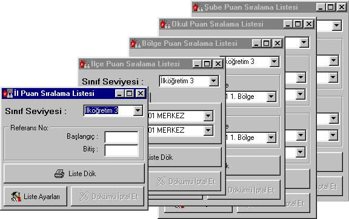
Şekil - 9 Puan Sıralama Listesi Ekranları
Bütün Liste dökümleri kullanıcı tanımlı olup, kullanıcının kendi ihtiyacına göre farklı listeler oluşturması mümkündür.
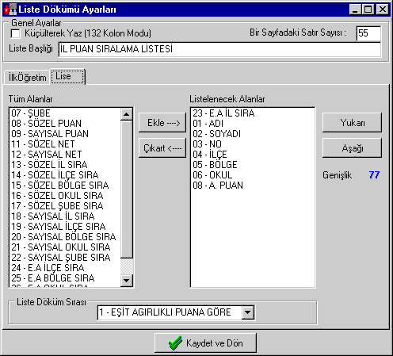
Şekil - 10 Liste Dökümü Ayarları Ekranı
7- Sonuçların Internette yayınlanması:
Sınav değerlendirme bittikten sonra istenirse sonuçlar internet üzerinden yayınlanabilir.
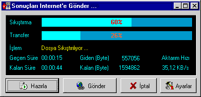
Şekil - 11 Internet üzerinden sonuç yayınlama ekranı
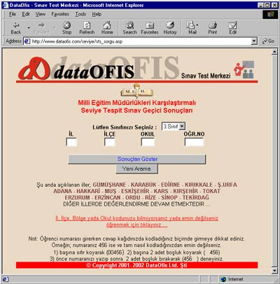
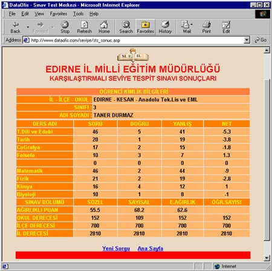